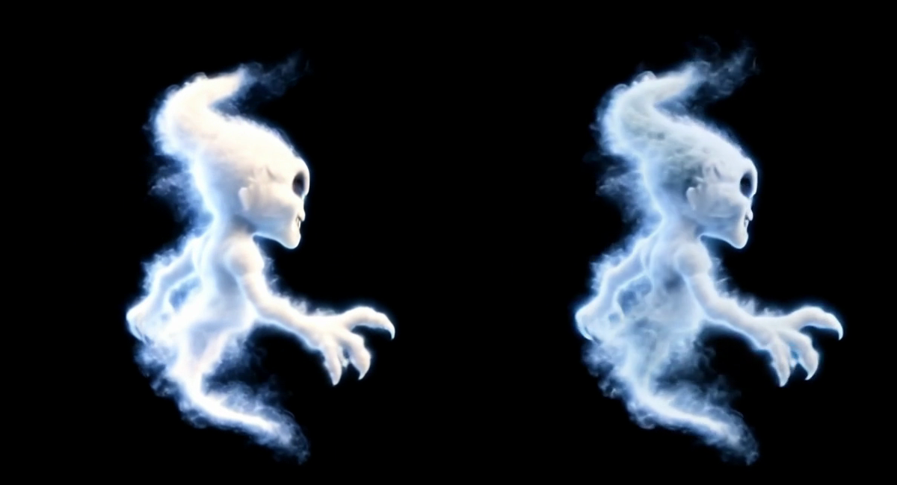

NEW CHARACTER PERFORMANCE · SILENT REVIEW
A little wave, then gone
10.6 seconds. The first five seconds are the existing idle film; watch the actual straight cut into the new wave at about 5.1 seconds, then the fog departure. There is no crossfade, pose registration, reversed footage or frame interpolation. Review whether motion carries through the cut. All frames pass the 20% clearance check. The original ends at near-black; this edit adds a half-second black hold, ending with nine exact-black frames. The starting join and visual quality still need human approval; this is not a public cue.
CHARACTER · COMPLETE ROUND-TRIP REVIEW
Friendly → scary → friendly
25 seconds. Watch for the same being through both transformations and for a jump or pause at each of the four joins. Straight cuts; no crossfade, reversal or frame interpolation. Human join approval is pending.
SCARY TURN · APPROVED MATERIAL DIRECTION, FILM REVIEW PENDING
A turn made of fog
5 seconds. The approved side-frame material is now applied to the full original turn. The head and torso are more porous; the forearms and profile still retain some solid anatomy. Check whether that reads as one smoky being throughout. Both endpoints changed, so earlier transition comparisons cannot approve this version. Bright smoke passes the 20% reserve check; very faint encoding pixels at level 5 fail the strict level-4 check in 54 frames. This is a source-only review, not a new cue or loop. Watch the existing scary film → edited turn handoff; it changes the smoke colour and density at the cut and is not approved.
Compare the same side-view frame

The same decoded frame at 2.5 seconds: original left, edited right. Still material approval does not establish full-film or transition approval.
ATMOSPHERE · PICTURE AND SOUND PROOF
Bats sound proof · picture superseded
Visual direction rejected: lettering fades too much and bats need to be smaller, faster and approach from behind the smoke. Retained here for sound reference only. 5 seconds. Unmute this player to hear the sound proof. Check the wing motion, fog breakup and sound character. The longer entrance and readable hold still need production. This version keeps over 20% effect clearance and ends completely black.